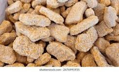
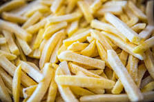
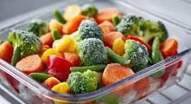
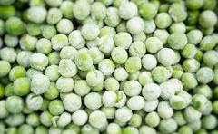

Our frozen chicken nuggets are a delicious and convenient snack or meal option for all ages. Made from high-quality chicken and lightly seasoned, they are perfect for quick cooking at home, whether baked or fried. Crispy on the outside and tender on the inside, these nuggets are loved by kids and adults alike. In our store, we provide fresh and safe frozen chicken nuggets, ensuring great taste and quality every time. With clear images showcasing their golden, appetizing look, customers can easily choose a tasty and hassle-free meal option.

Our frozen French fries are a quick, tasty, and convenient snack or side dish for everyone. Made from high-quality potatoes, they are perfectly cut and ready to cook, giving you crispy and golden fries in minutes. Ideal for baking or frying at home, these fries are loved by kids and adults alike. In our store, we offer fresh and safe frozen French fries, ensuring consistent quality and great taste every time. With clear images showing their delicious appearance, customers can easily choose a favorite snack or meal addition.

Our frozen mixed vegetables are a healthy, convenient, and versatile option for any meal. Packed with a colorful variety of vegetables like carrots, peas, corn, and beans, they are rich in vitamins and nutrients. Perfect for soups, stir-fries, or side dishes, these vegetables save time in the kitchen without compromising on freshness or taste. In our store, we offer high-quality frozen mixed vegetables that are carefully processed and preserved to maintain their natural flavor and texture. With clear images showcasing their vibrant colors, customers can easily choose a nutritious and delicious option for everyday meals.

Our frozen peas are a fresh, convenient, and nutritious option for everyday cooking. Packed with vitamins, fiber, and natural sweetness, they are perfect for soups, stir-fries, rice dishes, or as a simple side. Carefully harvested and quickly frozen, our peas retain their natural flavor, color, and texture, ensuring high quality in every pack. In our store, we provide premium frozen peas with clear images that let customers see their freshness and vibrant green color, making it easy to choose a healthy and tasty addition to any meal.